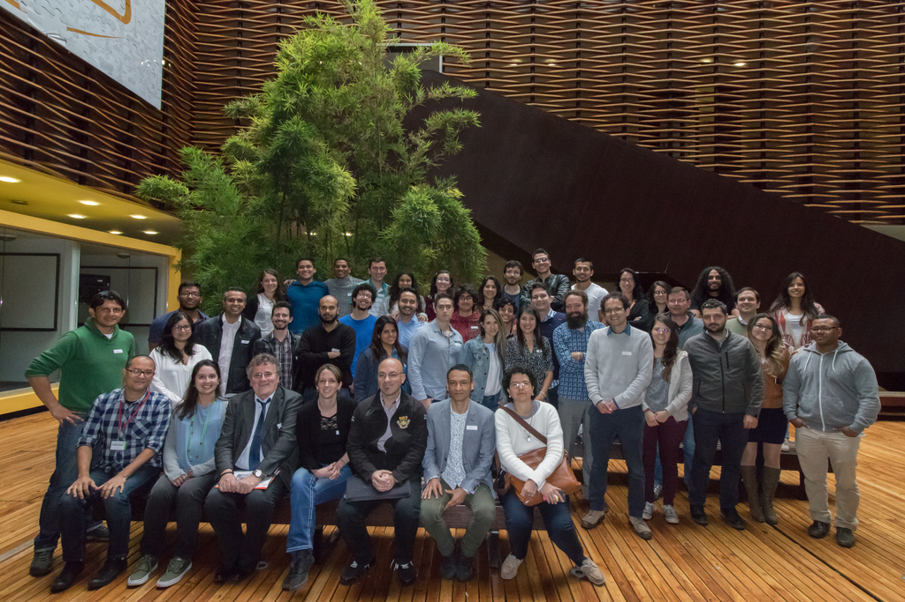

Computational Biophysics
Max Planck Tandem Group
Max Planck Tandem Group
|
Upcoming Events

COLLOQUIUM: Time: 10:00 am Place: Universidad de los Andes, Cl. 19A #1e-37, Bogotá, Colombia Building-room: W-101 Google map Stream live here  ABSTRACT: Cell membranes contain a large variety of lipid types and are crowded with proteins, endowing them with the plasticity needed to fulfill their key roles in cell functioning. The compositional complexity of cellular membranes gives rise to a heterogeneous lateral organization, which is still poorly understood. Computational models, in particular molecular dynamics simulations and related techniques, have provided important insight into the organizational principles of cell membranes over the past decades. We are particularly interested in lipid-protein interactions and their potential contributions to the lateral organization of membranes. I will discuss current capabilities of simulations to simulate membrane models and membrane proteins, highlighting properties of lipid-protein interactions that may contribute to shaping biological membranes.
ABSTRACT: Cell membranes contain a large variety of lipid types and are crowded with proteins, endowing them with the plasticity needed to fulfill their key roles in cell functioning. The compositional complexity of cellular membranes gives rise to a heterogeneous lateral organization, which is still poorly understood. Computational models, in particular molecular dynamics simulations and related techniques, have provided important insight into the organizational principles of cell membranes over the past decades. We are particularly interested in lipid-protein interactions and their potential contributions to the lateral organization of membranes. I will discuss current capabilities of simulations to simulate membrane models and membrane proteins, highlighting properties of lipid-protein interactions that may contribute to shaping biological membranes.
BIO: Peter Tieleman studied physical chemistry at the University of Groningen in the Netherlands, where he obtained his PhD under the supervision of Herman Berendsen, one of the pioneers of biomolecular simulation. After a year as EMBO fellow at the University of Oxford in Mark Sansom's research group, Tieleman joined the University of Calgary in 2000. He is currently Professor and Canada Research in Molecular Simulation in the Department of Biological Sciences, working in the area of biomolecular simulation and computational biology with a particular interest in cell membranes.
Past Events


1st meeting of Colombian Max Planck Tandem Groups

June 1-3, 2018 | Tweets by camiloapontelab |